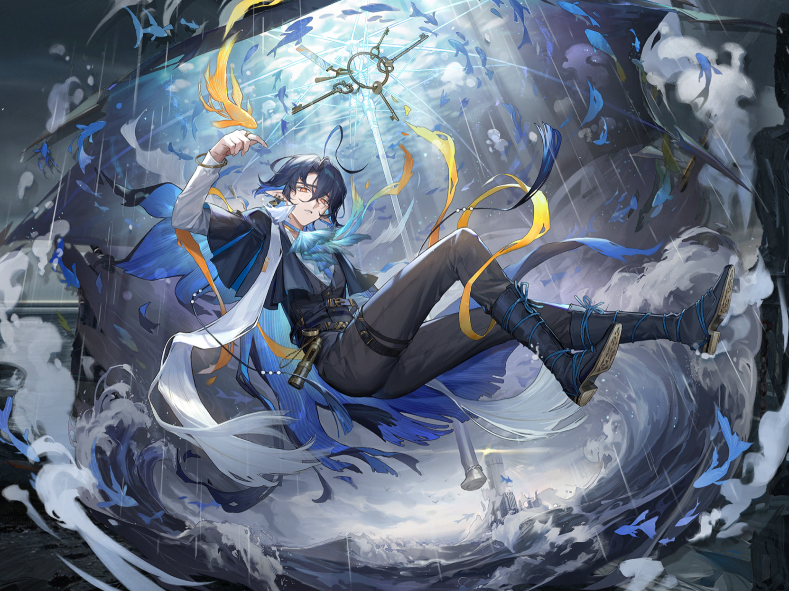

Web: Getting Started
click picture to change another one~

This is one of my favorite pictures.
Here are other painters that i am fond of:
为什么想要学习web开发呢，因为我想要做一个能让人开心的网站，或者任何形式都行——手机APP、小程序、游戏等等，我觉得这是我学习编程的初心，不管这还是否是一个热门行业。
以此为起点，我想走得更远，我也许还会走向别的方向，that's all OK, 但我不会忘记这个出发点（￣︶￣）↗